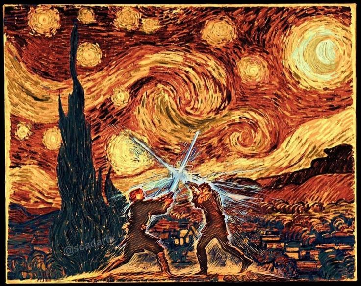
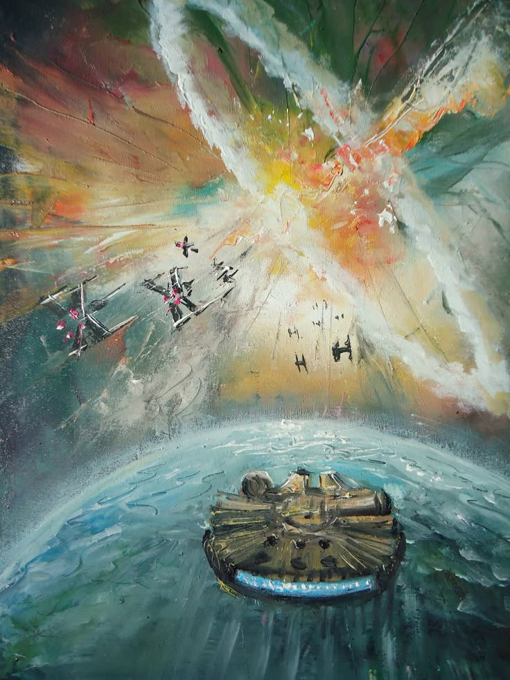
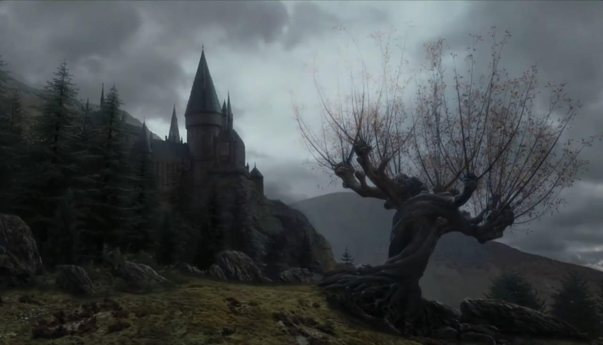
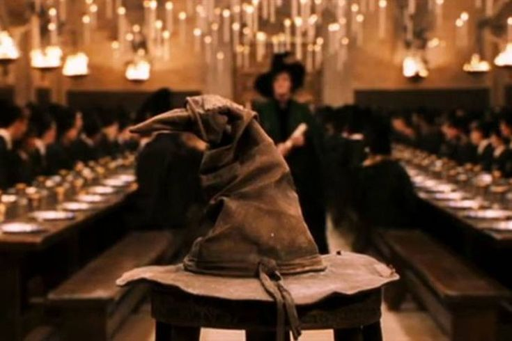

Explora el arte inspirado en mundos alternativos como Star Wars y Harry Potter.

Duelo galáctico entre luces y sombras bajo el cielo de Van Gogh.

Confrontacción espacial al estilo impresionista, con naves de Star Wars.

El Sauce Boxeador retorcido frente a Hogwarts

Sombrero seleccionador: elige el destino de los nuevos magos.